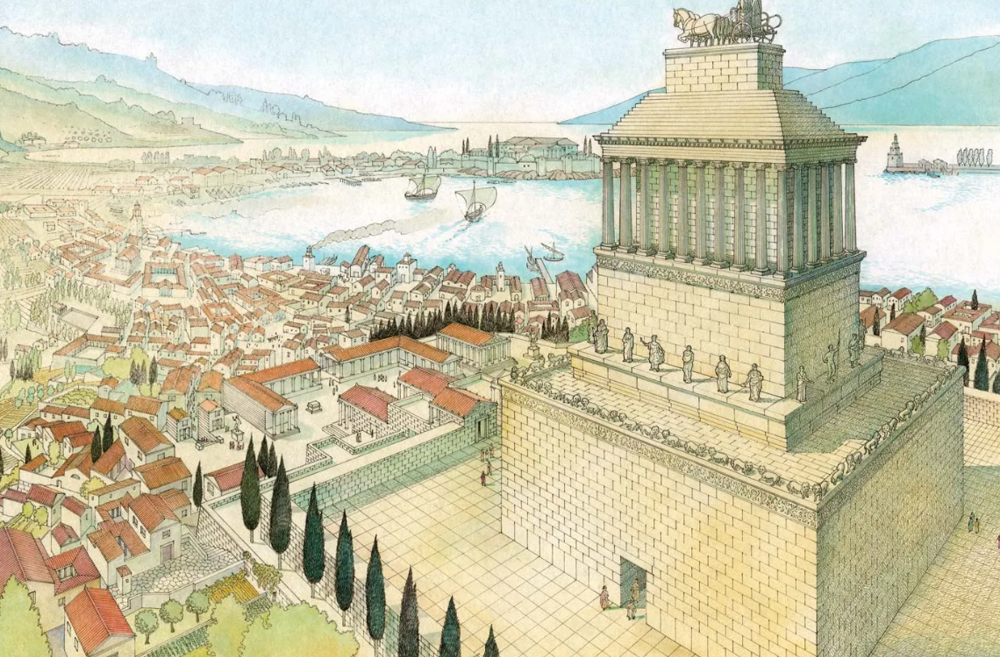

Halikarnas je bil v 4. st. pr. n. št. prestolnica majhnega kraljestva v Mali Aziji. Leta 377 pr. n. št. je umrl vladar Hekatomen iz Milasa, kraljestvo pa zapustil sinu Mavzolu. Hekatomen je nadzoroval več mest in okrožij, imel pa je tudi hčerke in sinove: Ado, Idriejo, Piksodar. Mavzol je razširil ozemlje do jugozahodne obale Anatolije. Skupaj z Artemizijo je vladal 24 let, obema pa je bil všeč grški način življenja in vladanja.
Mavzol je izbral Halikarnas za novo prestolnico in jo okrasil z marmornatimi templji, kipci in zgradbami. Po Mavzolovi smrti leta 353 pr. n. št. je Artemizija vladala sama. Mavzol je že pred smrtjo načrtoval grobnico, ki so jo dokončali sorodniki. Grobnica je postala znana kot mavzolej.
Artemizija je najela vrhunske grške umetnike (Skopas, Leohar, Briaksis, Timotej) in grobnico zgradila na griču s pogledom na mesto. Stopnišče z levskimi kipci je vodilo do marmorne ploščadi z grobnico. Zunaj so bili kipi bogov in boginj, vogale pa so varovali konjeni bojevniki. Reliefi so prikazovali bitke (Kentavri proti Lapitom, Grki proti Amazonkam).
Mavzolej je imel 36 stebrov in piramidalno streho. Na vrhu je bila kvadriga – voz s štirimi konji in podobi Mavzola ter Artemizije.
Mavzolej v Halikarnasu je bil eno od sedmih čudes starega sveta, znano po svoji lepoti in bogatem okrasju. Zgradila sta ga arhitekta Satir in Pitij, verjetno pa ga je Mavzol začel graditi še pred smrtjo. Natančen čas uničenja ni znan, verjetno pa ga je poškodoval potres. Kasneje so njegove kamne uporabili za gradnjo gradu v Bodrumu. Danes so ohranjeni le temelji in nekaj skulptur, ki so jih odkrili arheologi v 19. stoletju.
